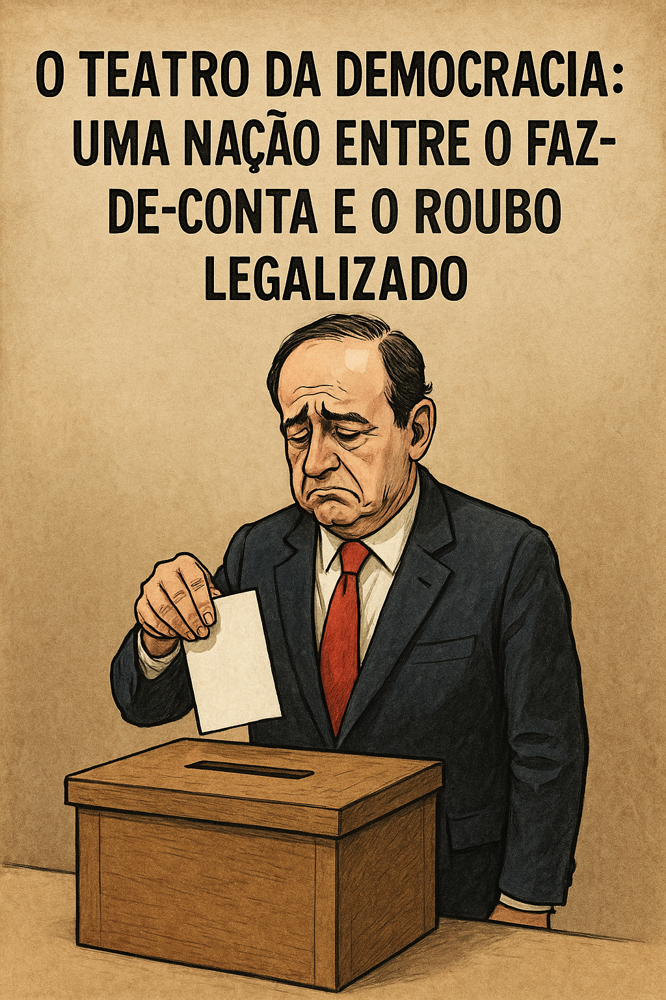

Publicado em 2025-05-20 09:56:56
Portugal é hoje um país apagado, economicamente débil, moralmente vacilante e politicamente infestado por uma praga que não se elimina com pesticidas normais: a mediocridade organizada e a corrupção institucionalizada.
Mas não nos enganemos, isto não nasceu ontem. Foi uma obra de engenharia minuciosa, erguida ao longo de quase cinco décadas com cimento de compadrio, ferro de nepotismo e reboco de promessas ocas. É uma verdadeira catedral da desfaçatez, onde cada novo governo entra em procissão, abanando a bandeira da esperança, apenas para depois se sentar no altar dourado da incompetência.
Depois do 25 de Abril e da acalmação revolucionária de Novembro de 1975, Portugal ainda deu sinais de que podia, quiçá, tornar-se um país funcional. Houve melhorias: obras públicas essenciais, o nosso glorioso SNS, a entrada na CEE. Os portugueses respiravam liberdade. Mas a economia tossia. A indústria nacional foi posta em coma profundo pelo calor revolucionário: nacionalizações, greves, fugas de capitais, delírios de autogestão onde até os cafés de bairro tinham comissões de trabalhadores.
Vieram os fundos europeus. Oh, os fundos! Aquele maná que caía do céu de Bruxelas como se fóssemos um país africano com sotaque latino. Com eles ergueram-se estradas, escolas, rotundas com esculturas de ferros torcidos. E claro, ergueram-se contas bancárias em paraísos fiscais, essas ilhas da esperteza lusa.
Com a entrada dos anos 80, Portugal descobriu um novo modelo empresarial: o feudalismo corporativo. O patrão, qual senhor feudal, exigia vassalagem e não resultados. A produtividade? Um conceito estranho vindo do estrangeiro. Aqui o que importava era não levantar ondas. E quem as fazia, acabava na prateleira de "inadaptados".
Foi neste caldo que a mediocridade se tornou rainha e a crítica virou crime de lesa-majestade. A partir dos anos 90, aperfeiçoou-se a arte do faz-de-conta: empresas fingiam que produziam, governos que governavam, e o povo que acreditava.
A corrupção, essa, deixou de ser um desvio para se tornar uma via rápida para a fortuna. A construção civil virou a galinha de ovos de ouro dos partidos. Os empreiteiros financiavam campanhas e recebiam contratos públicos com um piscar de olho. Políticos entravam pobres e saíam milionários, como num jogo de Monopoly viciado.
E a justiça? Bem, a justiça tornou-se uma arquivadora nacional. Processos que duram décadas, prescrições cirúngicas, decisões que parecem roteiros de telenovela. A máscara caiu de vez com o caso Sócrates: um primeiro-ministro que endividou o país como um jogador compulsivo com cartões alheios. E no fim? Continua livre, sorridente, arrolando testemunhas como quem escolhe convidados para um casamento.
O povo, esse herói trágico, habituou-se à miséria como quem se conforma com uma infiltração no tecto. Vai-se pondo um balde. E enquanto se grita "golo!" ou se caminha em fé até Fátima, os donos do país riem-se num terraço de Cascais.
Portugal não está morto. Mas está adormecido, dopado com fado, futebol e facturas. E até que desperte, continuará neste teatro onde os actores não representam o povo, apenas o papel que o sistema lhes escreveu.
Porque no fundo, como diria o cronista latino:
Stabat in scena, non in causa.
[Continua... ou termina contigo, leitor desperto?]
E lembra-te: quando os medíocres riem no palco… é sinal que a cortina ainda não caiu.
Mas o público lúcido já se está a levantar.
Autor: Francisco Gonçalves in Fragmentos de Caos